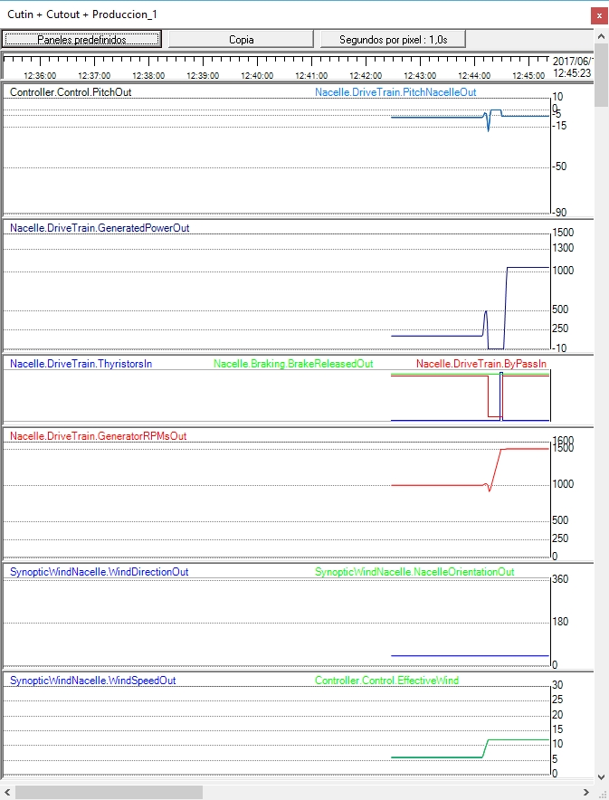

Ziel:Beobachten Sie die Modusänderung, die mit dem Sprung von 1000 bis 1500 und dessen Auswirkungen auf die Kontrolle verbunden ist.
Was zu beachten ist:Zielgeschwindigkeit, Steuerstatus und Leistungsantwort.
Was ist zu beachten:Variable, die die Änderung auslöst, vor/nach Status und Transienten.
RECHT Beachten Sie, ob während des Übergangs Stromspitzen/Dropfen auftreten.
Ziel dieser Praxis ist es, die Studierenden mit dem Konzept vertraut zu machen, den "Verbindungsmodus" des elektrischen Generators auf das Netz zu ändern, und die Gründe, warum diese Funktionalität notwendig ist.
In dieser Klasse gehen wir davon aus, dass die Windenergieanlage mit dem Netz verbunden ist (erzeugt), wobei Wind die Verwendung der 6-poligen Verbindung des Generators (kleiner Generator) zwingt. Vgl.Einstellung der Bedingungen für den Einstieg in die Produktion mit niedrigem Wind.
In diesem Experiment werden wir die Windgeschwindigkeit erhöhen, so dass sich die Generatorverbindung auf 4 Pole (großer Generator) ändert: Diese Windgeschwindigkeit muss höher sein als die "Min für große Gen." Vgl.Funktionelle Windwerte. Die Mindestwindgeschwindigkeit für diesen Übergang beträgt 6,6 m/s. Ändern Sie die Windgeschwindigkeit beispielsweise auf 12 m/s mit den "Page Forward"-Tasten (siehe Schritt 7 inEinstellung der Bedingungen für den Einstieg in die Produktion mit niedrigem Wind).
Auf einem Recorder mit dem Panel "Cutin + Cutout + Production" sehen Sie die folgende Signalentwicklung.

Sie können sehen, dass mit zunehmendem Wind die erzeugte Leistung zunimmt: dies geschieht, bis der Wind (zumindest für eine bestimmte Zeit) die Geschwindigkeit von 6,6 m/s überschreitet. Bei Überschreitung dieses Wertes leitet der Regler eine Operation ein, umÄnderung der Generatorverbindung, die von einer 6-poligen Verbindung (kleiner Generator) an einen 4-poligen Anschluss (Großer Generator).
Dazu muss der Generator vom Netz abgeschaltet werden: Hierzu ändert er die Steigung der Schaufeln, so dass die erzeugte Leistung reduziert und den Thyristor-Bypass-Kontaktor deaktiviert wird. In diesem Moment ist die Drehzahl der Generatorwelle unter die Synchrondrehzahl des "kleinen Generators" gefallen, der 1000 U/min beträgt. In dieser Situation wird bei abgeschaltetem Generator der Generatoranschlussmodus geändert. Dies geschieht mit den in der Registerkarte "Elektrisches Diagramm" des "Elektrikumsschranks" gezeigten Schützen. Siehe folgende Abbildung.
At that moment, the controller begins a grid connection operation (cutin): it controls the pitch so that mechanical torque is extracted from the wind, which accelerates the power train; when the generator's rotational speed approaches the synchronous speed (now 1,500 rpm), the thyristors are progressively opened (see Weicher Starter (weiche Verbindung) zum Netz), die bei der Aktivierung der Thyristor-Bypassschützen gipfelt.
Ein bemerkenswertes Merkmal der simulierten Windenergieanlage ist, dass diese Operation in sehr kurzer Zeit in der Größenordnung von 25 Sekunden durchgeführt werden kann. Dies ist aufgrund des Produktionsverlusts wichtig, den es mit sich bringt.